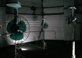

Index
Presenters
#000001
#000002
#000003
#000004
#番外編
#000005
#000006
#000007
|
#000005
ドークボットTΩKYΩ in 日本科学未来館
〜俺様・非科学・刹那編〜
2006年9月16日(土)
17:30開場 18:00〜21:00
日本科学未来館 7F中庭
入場無料
協力：ｴﾝﾀｰﾃｲﾝﾒﾝﾄｺﾝﾋﾟｭｰﾃｨﾝｸﾞ2006 / 日本科学未来館 / 東京ｴｰﾙ
「電気で変なことする人たち」ドークボットがついにたどり着いた、
宇宙に一番近いパワースポット日本科学未来館！
その中でも特に宇宙に近い屋上中庭で、
電極刺し違えギリギリの俺様セレモニーを
一服しませんか？
奥山順市

ウジノ・アンド・ザ・ローテーターズ（宇治野宗輝）

梅田哲也

＜DJ＞ 畠中実
＜５分プレゼン／ライブ 出演者＞
・Antonin Fourneau (from France)
・Emi Maeda
・大城真
・DJぷりぷり {PANK-VOICE}
・寺林憲一
・平＃重行
・宮下芳明
・u+uco
・Juha Huuskonen (from Finland)
・RAKASU PROJECT.
| |